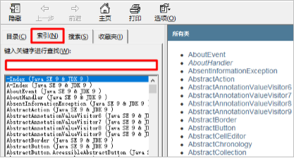

08-常用API
本文最后更新于：2022年8月29日 上午
本文是黑马程序员的Java入门基础视频教程的配套官方笔记，仅供学习使用
1.API
1.1API概述
什么是API
API (Application Programming Interface) ：应用程序编程接口
java中的API
指的就是 JDK 中提供的各种功能的 Java类，这些类将底层的实现封装了起来，我们不需要关心这些类是如何实现的，只需要学习这些类如何使用即可，我们可以通过帮助文档来学习这些API如何使用。
1.2如何使用API帮助文档
- 打开帮助文档

- 找到索引选项卡中的输入框

- 在输入框中输入Random
- 看类在哪个包下

- 看类的描述

- 看构造方法

- 看成员方法
2.String类
2.1String类概述
String 类代表字符串，Java 程序中的所有字符串文字（例如“abc”）都被实现为此类的实例。也就是说，Java 程序中所有的双引号字符串，都是 String 类的对象。String 类在 java.lang 包下，所以使用的时候不需要导包！
2.2String类的特点
- 字符串不可变，它们的值在创建后不能被更改
- 虽然 String 的值是不可变的，但是它们可以被共享
- 字符串效果上相当于字符数组( char[] )，但是底层原理是字节数组( byte[] )
2.3String类的构造方法
常用的构造方法
方法名 说明 public String() 创建一个空白字符串对象，不含有任何内容 public String(char[] chs) 根据字符数组的内容，来创建字符串对象 public String(byte[] bys) 根据字节数组的内容，来创建字符串对象 String s = “abc”; 直接赋值的方式创建字符串对象，内容就是abc 示例代码
1
2
3
4
5
6
7
8
9
10
11
12
13
14
15
16
17
18
19
20
21public class StringDemo01 {
public static void main(String[] args) {
//public String()：创建一个空白字符串对象，不含有任何内容
String s1 = new String();
System.out.println("s1:" + s1);
//public String(char[] chs)：根据字符数组的内容，来创建字符串对象
char[] chs = {'a', 'b', 'c'};
String s2 = new String(chs);
System.out.println("s2:" + s2);
//public String(byte[] bys)：根据字节数组的内容，来创建字符串对象
byte[] bys = {97, 98, 99};
String s3 = new String(bys);
System.out.println("s3:" + s3);
//String s = “abc”; 直接赋值的方式创建字符串对象，内容就是abc
String s4 = "abc";
System.out.println("s4:" + s4);
}
}
2.4创建字符串对象两种方式的区别
通过构造方法创建
通过 new 创建的字符串对象，每一次 new 都会申请一个内存空间，虽然内容相同，但是地址值不同
直接赋值方式创建
以“”方式给出的字符串，只要字符序列相同(顺序和大小写)，无论在程序代码中出现几次，JVM 都只会建立一个 String 对象，并在字符串池中维护
2.5字符串的比较
2.5.1==号的作用
- 比较基本数据类型：比较的是具体的值
- 比较引用数据类型：比较的是对象地址值
2.5.2equals方法的作用
方法介绍
1
public boolean equals(String s) 比较两个字符串内容是否相同、区分大小写示例代码
1
2
3
4
5
6
7
8
9
10
11
12
13
14
15
16
17
18
19
20
21
22
23public class StringDemo02 {
public static void main(String[] args) {
//构造方法的方式得到对象
char[] chs = {'a', 'b', 'c'};
String s1 = new String(chs);
String s2 = new String(chs);
//直接赋值的方式得到对象
String s3 = "abc";
String s4 = "abc";
//比较字符串对象地址是否相同
System.out.println(s1 == s2);
System.out.println(s1 == s3);
System.out.println(s3 == s4);
System.out.println("--------");
//比较字符串内容是否相同
System.out.println(s1.equals(s2));
System.out.println(s1.equals(s3));
System.out.println(s3.equals(s4));
}
}
2.6用户登录案例
2.6.1案例需求
已知用户名和密码，请用程序实现模拟用户登录。总共给三次机会，登录之后，给出相应的提示
2.6.2代码实现
1 | |
2.7遍历字符串案例
2.7.1案例需求
键盘录入一个字符串，使用程序实现在控制台遍历该字符串
2.7.2代码实现
1 | |
2.8统计字符次数案例
2.8.1案例需求
键盘录入一个字符串，统计该字符串中大写字母字符，小写字母字符，数字字符出现的次数(不考虑其他字符)
2.8.2代码实现
1 | |
2.9字符串拼接案例
2.9.1案例需求
定义一个方法，把 int 数组中的数据按照指定的格式拼接成一个字符串返回，调用该方法，
并在控制台输出结果。例如，数组为 int[] arr = {1,2,3}; ，执行方法后的输出结果为：[1, 2, 3]
2.9.2代码实现
1 | |
2.10字符串反转案例
2.10.1案例需求
定义一个方法，实现字符串反转。键盘录入一个字符串，调用该方法后，在控制台输出结果
例如，键盘录入 abc，输出结果 cba
2.10.2代码实现
1 | |
2.11帮助文档查看String常用方法
| 方法名 | 说明 |
|---|---|
| public boolean equals(Object anObject) | 比较字符串的内容，严格区分大小写(用户名和密码) |
| public char charAt(int index) | 返回指定索引处的 char 值 |
| public int length() | 返回此字符串的长度 |
3.ArrayList
3.1ArrayList类概述
什么是集合
提供一种存储空间可变的存储模型，存储的数据容量可以发生改变
ArrayList集合的特点
底层是数组实现的，长度可以变化
泛型的使用
用于约束集合中存储元素的数据类型
3.2ArrayList类常用方法
3.2.1构造方法
| 方法名 | 说明 |
|---|---|
| public ArrayList() | 创建一个空的集合对象 |
3.2.2成员方法
| 方法名 | 说明 |
|---|---|
| public boolean remove(Object o) | 删除指定的元素，返回删除是否成功 |
| public E remove(int index) | 删除指定索引处的元素，返回被删除的元素 |
| public E set(int index,E element) | 修改指定索引处的元素，返回被修改的元素 |
| public E get(int index) | 返回指定索引处的元素 |
| public int size() | 返回集合中的元素的个数 |
| public boolean add(E e) | 将指定的元素追加到此集合的末尾 |
| public void add(int index,E element) | 在此集合中的指定位置插入指定的元素 |
3.2.3示例代码
1 | |
3.3ArrayList存储字符串并遍历
3.3.1案例需求
创建一个存储字符串的集合，存储3个字符串元素，使用程序实现在控制台遍历该集合
3.3.2代码实现
1 | |
3.4ArrayList存储学生对象并遍历
3.4.1案例需求
创建一个存储学生对象的集合，存储3个学生对象，使用程序实现在控制台遍历该集合
3.4.2代码实现
1 | |
3.5ArrayList存储学生对象并遍历升级版
3.5.1案例需求
创建一个存储学生对象的集合，存储3个学生对象，使用程序实现在控制台遍历该集合
学生的姓名和年龄来自于键盘录入
3.5.2代码实现
1 | |
作者水平有限，有错误请不吝指正，转载请注明出处！